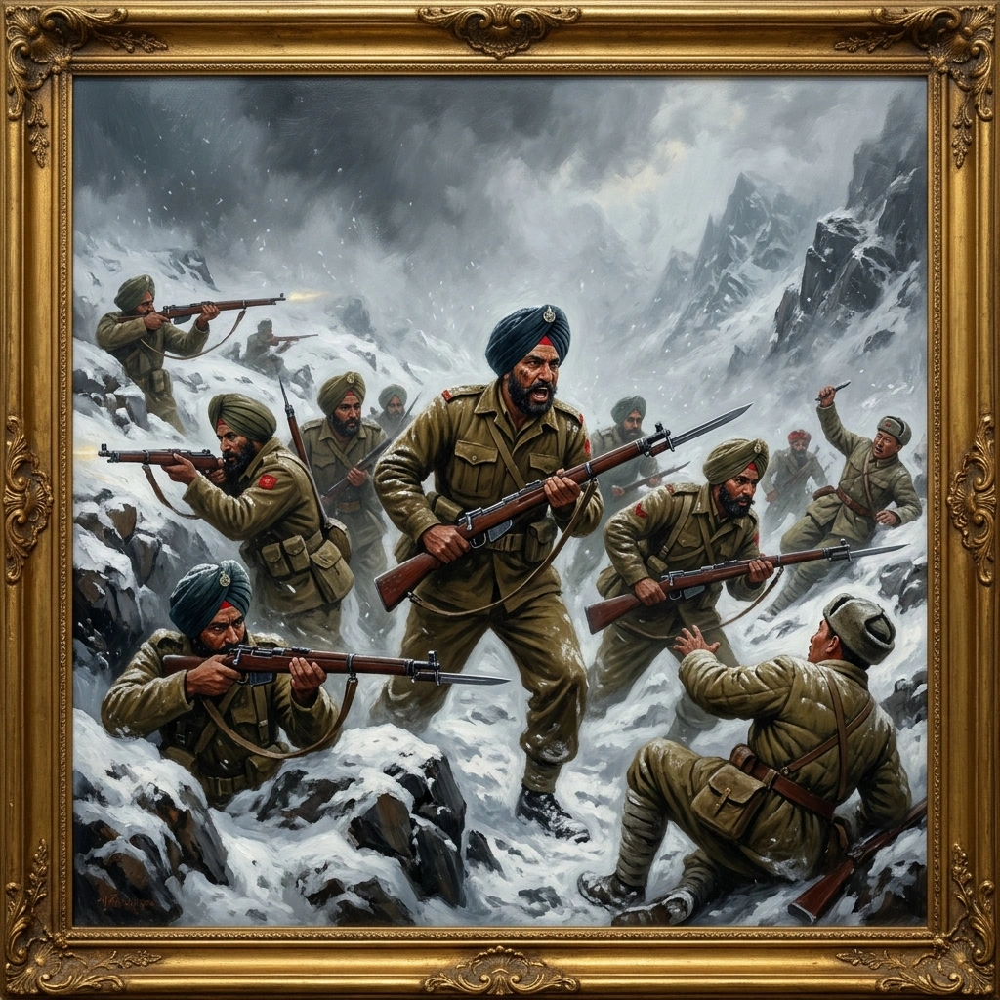

ਭਾਰਤੀ-ਚੀਨੀ ਯੁੱਧ, 1962


ਸਿਰਲੇਖ: The Indo-Sino War, 1962
ਸ਼੍ਰੇਣੀ: The Indo-Sino War, 1962
ਕਲਾਕਾਰ: ਸਿੱਖ ਰੈਜੀਮੈਂਟal Centre
ਸਾਲ: ਇਤਿਹਾਸਕ
ਸ਼੍ਰੇਣੀ: The Indo-Sino War, 1962
ਕਲਾਕਾਰ: ਸਿੱਖ ਰੈਜੀਮੈਂਟal Centre
ਸਾਲ: ਇਤਿਹਾਸਕ
ਭਾਰਤੀ-ਚੀਨੀ ਯੁੱਧ, 1962
ਹਿਮਾਲੀਅਨ ਸਰਹੱਦ ਦੇ ਨਾਲ ਵਧਦੇ ਤਣਾਅ ਨੇ ਭਾਰਤ ਨੂੰ ਇੱਕ ਫਾਰਵਰਡ ਨੀਤੀ ਅਪਣਾਉਣ ਅਤੇ NEFA ਵਿੱਚ ਸੈਨਿਕਾਂ ਨੂੰ ਤਾਇਨਾਤ ਕਰਨ ਲਈ ਪ੍ਰੇਰਿਤ ਕੀਤਾ। 1 ਸਿੱਖ ਮਈ 1961 ਵਿੱਚ ਆਇਆ ਅਤੇ ਬਾਅਦ ਵਿੱਚ ਤਵਾਂਗ ਸੈਕਟਰ ਵਿੱਚ ਚਲਾ ਗਿਆ। ਜਦੋਂ ਚੀਨੀਆਂ ਨੇ 20 ਅਕਤੂਬਰ 1962 ਨੂੰ ਧੋਲਾ 'ਤੇ ਹਮਲਾ ਕੀਤਾ, ਤਾਂ ਅਸਾਮ ਰਾਈਫਲਜ਼ ਨਾਲ ਸੇਵਾ ਕਰਦੇ ਕੈਪਟਨ ਮਹਾਬੀਰ ਪ੍ਰਸਾਦ ਨੇ ਮੌਤ ਤੱਕ ਲੜਿਆ ਅਤੇ ਮਰਨ ਉਪਰੰਤ ਮਹਾਂਵੀਰ ਚੱਕਰ ਪ੍ਰਾਪਤ ਕੀਤਾ। 23 ਅਕਤੂਬਰ ਦੀ ਸਵੇਰ ਵੇਲੇ, ਸੂਬੇਦਾਰ ਜੋਗਿੰਦਰ ਸਿੰਘ ਦੀ ਕਮਾਨ ਹੇਠ ਆਈ ਬੀ ਰਿਜ ਪੋਸਟ 'ਤੇ ਵਾਰ-ਵਾਰ ਚੀਨੀ ਹਮਲੇ ਹੋਏ। ਉਸ ਦੀ ਪਲਟਨ ਨੇ ਵੱਧ ਰਹੇ ਜਾਨੀ ਨੁਕਸਾਨ ਦੇ ਬਾਵਜੂਦ ਲਗਾਤਾਰ ਲਹਿਰਾਂ ਨੂੰ ਭਜਾਇਆ। ਪੱਟ ਵਿੱਚ ਜ਼ਖਮੀ ਹੋ ਕੇ, ਉਸਨੇ ਬਚਾਅ ਪੱਖ ਨੂੰ ਨਿਰਦੇਸ਼ਤ ਕਰਨਾ ਜਾਰੀ ਰੱਖਿਆ ਅਤੇ ਅੰਤ ਵਿੱਚ ਇੱਕ ਬੇਯੋਨੈਟ ਚਾਰਜ ਵਿੱਚ ਬਚੇ ਲੋਕਾਂ ਦੀ ਅਗਵਾਈ ਕੀਤੀ। ਜਦੋਂ ਸਥਿਤੀ ਨੂੰ ਕਾਬੂ ਕੀਤਾ ਗਿਆ, ਤਾਂ ਤੋਪਖਾਨੇ ਨੂੰ ਪੋਸਟ 'ਤੇ ਹੀ ਬੁਲਾਇਆ ਗਿਆ। ਜੋਗਿੰਦਰ ਸਿੰਘ ਬਾਅਦ ਵਿੱਚ ਕੈਦ ਵਿੱਚ ਆਪਣੇ ਜ਼ਖ਼ਮਾਂ ਕਾਰਨ ਮਰ ਗਿਆ ਅਤੇ ਮਰਨ ਉਪਰੰਤ ਪਰਮਵੀਰ ਚੱਕਰ ਨਾਲ ਸਨਮਾਨਿਤ ਕੀਤਾ ਗਿਆ, NEFA ਵਿੱਚ ਅਜਿਹਾ ਇੱਕੋ ਇੱਕ ਪੁਰਸਕਾਰ ਹੈ। ਮਈ 1963 ਵਿਚ ਚੀਨੀਆਂ ਦੁਆਰਾ ਉਸ ਦੀਆਂ ਅਸਥੀਆਂ ਵਾਪਸ ਕਰ ਦਿੱਤੀਆਂ ਗਈਆਂ ਸਨ। ਟੋਂਗ ਪੇਂਗ ਲਾ ਵਿਖੇ, ਲੈਫਟੀਨੈਂਟ ਹਰੀ ਪਾਲ ਕੌਸ਼ਿਕ ਦੀ ਅਗਵਾਈ ਵਾਲੀ ਡੈਲਟਾ ਕੰਪਨੀ, ਜਿਸ ਨੂੰ ਹੌਲਦਾਰ ਸਰੂਪ ਸਿੰਘ ਦੇ ਹਿੱਸੇ ਦਾ ਸਮਰਥਨ ਮਿਲਿਆ, ਨੇ 26 ਅਕਤੂਬਰ ਤੱਕ ਮਿਲਕਟੋਂਗਾ ਅਤੇ ਫਿਰ ਸੇਲਾ ਦੇ ਆਦੇਸ਼ਾਂ ਅਧੀਨ ਵਾਪਸ ਜਾਣ ਤੋਂ ਪਹਿਲਾਂ ਬਹੁਤ ਵੱਡੀ ਫੋਰਸ ਦੁਆਰਾ ਲਿਫਾਫੇ ਦੇ ਹਮਲਿਆਂ ਨੂੰ ਹਰਾਇਆ। ਸੇਲਾ ਵਿਖੇ, ਚਾਰਲੀ ਕੰਪਨੀ ਨੇ 10 ਨਵੰਬਰ ਨੂੰ ਡਜ਼ਾਜਿਰੋਂਗ ਲਾ ਵਿਖੇ ਇੱਕ ਹਮਲੇ ਨੂੰ ਰੋਕ ਦਿੱਤਾ। 15 ਨਵੰਬਰ ਨੂੰ ਫੋਰਸ ਵਿੱਚ ਇੱਕ ਜਾਸੂਸੀ ਹਮਲਾ ਕੀਤਾ ਗਿਆ ਸੀ, ਅਤੇ 17-18 ਨਵੰਬਰ ਦੀ ਵਾਪਸੀ ਦੌਰਾਨ, 1 ਸਿੱਖ ਲੜਿਆ ਜਦੋਂ ਗੋਲਾ ਬਾਰੂਦ ਖਤਮ ਹੋ ਗਿਆ ਸੀ। ਸੈਕਿੰਡ ਲੈਫਟੀਨੈਂਟ ਸੁਰਿੰਦਰ ਡਾਗੁਰ, ਲਾਂਸ ਨਾਇਕ ਪ੍ਰੀਤਮ ਸਿੰਘ ਅਤੇ ਸਿਪਾਹੀ ਨੌਰੰਗ ਸਿੰਘ ਨੇ ਆਪਣੇ ਆਪ ਨੂੰ ਵੱਖਰਾ ਕੀਤਾ, ਜਦਕਿ ਕਮਾਂਡਿੰਗ ਅਫਸਰ ਲੈਫਟੀਨੈਂਟ ਕਰਨਲ ਬੀ.ਐਨ. ਮਹਿਤਾ ਮਾਰਿਆ ਗਿਆ।
ਹਿਮਾਲੀਅਨ ਸਰਹੱਦ ਦੇ ਨਾਲ ਵਧਦੇ ਤਣਾਅ ਨੇ ਭਾਰਤ ਨੂੰ ਇੱਕ ਫਾਰਵਰਡ ਨੀਤੀ ਅਪਣਾਉਣ ਅਤੇ NEFA ਵਿੱਚ ਸੈਨਿਕਾਂ ਨੂੰ ਤਾਇਨਾਤ ਕਰਨ ਲਈ ਪ੍ਰੇਰਿਤ ਕੀਤਾ। 1 ਸਿੱਖ ਮਈ 1961 ਵਿੱਚ ਆਇਆ ਅਤੇ ਬਾਅਦ ਵਿੱਚ ਤਵਾਂਗ ਸੈਕਟਰ ਵਿੱਚ ਚਲਾ ਗਿਆ। ਜਦੋਂ ਚੀਨੀਆਂ ਨੇ 20 ਅਕਤੂਬਰ 1962 ਨੂੰ ਧੋਲਾ 'ਤੇ ਹਮਲਾ ਕੀਤਾ, ਤਾਂ ਅਸਾਮ ਰਾਈਫਲਜ਼ ਨਾਲ ਸੇਵਾ ਕਰਦੇ ਕੈਪਟਨ ਮਹਾਬੀਰ ਪ੍ਰਸਾਦ ਨੇ ਮੌਤ ਤੱਕ ਲੜਿਆ ਅਤੇ ਮਰਨ ਉਪਰੰਤ ਮਹਾਂਵੀਰ ਚੱਕਰ ਪ੍ਰਾਪਤ ਕੀਤਾ। 23 ਅਕਤੂਬਰ ਦੀ ਸਵੇਰ ਵੇਲੇ, ਸੂਬੇਦਾਰ ਜੋਗਿੰਦਰ ਸਿੰਘ ਦੀ ਕਮਾਨ ਹੇਠ ਆਈ ਬੀ ਰਿਜ ਪੋਸਟ 'ਤੇ ਵਾਰ-ਵਾਰ ਚੀਨੀ ਹਮਲੇ ਹੋਏ। ਉਸ ਦੀ ਪਲਟਨ ਨੇ ਵੱਧ ਰਹੇ ਜਾਨੀ ਨੁਕਸਾਨ ਦੇ ਬਾਵਜੂਦ ਲਗਾਤਾਰ ਲਹਿਰਾਂ ਨੂੰ ਭਜਾਇਆ। ਪੱਟ ਵਿੱਚ ਜ਼ਖਮੀ ਹੋ ਕੇ, ਉਸਨੇ ਬਚਾਅ ਪੱਖ ਨੂੰ ਨਿਰਦੇਸ਼ਤ ਕਰਨਾ ਜਾਰੀ ਰੱਖਿਆ ਅਤੇ ਅੰਤ ਵਿੱਚ ਇੱਕ ਬੇਯੋਨੈਟ ਚਾਰਜ ਵਿੱਚ ਬਚੇ ਲੋਕਾਂ ਦੀ ਅਗਵਾਈ ਕੀਤੀ। ਜਦੋਂ ਸਥਿਤੀ ਨੂੰ ਕਾਬੂ ਕੀਤਾ ਗਿਆ, ਤਾਂ ਤੋਪਖਾਨੇ ਨੂੰ ਪੋਸਟ 'ਤੇ ਹੀ ਬੁਲਾਇਆ ਗਿਆ। ਜੋਗਿੰਦਰ ਸਿੰਘ ਬਾਅਦ ਵਿੱਚ ਕੈਦ ਵਿੱਚ ਆਪਣੇ ਜ਼ਖ਼ਮਾਂ ਕਾਰਨ ਮਰ ਗਿਆ ਅਤੇ ਮਰਨ ਉਪਰੰਤ ਪਰਮਵੀਰ ਚੱਕਰ ਨਾਲ ਸਨਮਾਨਿਤ ਕੀਤਾ ਗਿਆ, NEFA ਵਿੱਚ ਅਜਿਹਾ ਇੱਕੋ ਇੱਕ ਪੁਰਸਕਾਰ ਹੈ। ਮਈ 1963 ਵਿਚ ਚੀਨੀਆਂ ਦੁਆਰਾ ਉਸ ਦੀਆਂ ਅਸਥੀਆਂ ਵਾਪਸ ਕਰ ਦਿੱਤੀਆਂ ਗਈਆਂ ਸਨ। ਟੋਂਗ ਪੇਂਗ ਲਾ ਵਿਖੇ, ਲੈਫਟੀਨੈਂਟ ਹਰੀ ਪਾਲ ਕੌਸ਼ਿਕ ਦੀ ਅਗਵਾਈ ਵਾਲੀ ਡੈਲਟਾ ਕੰਪਨੀ, ਜਿਸ ਨੂੰ ਹੌਲਦਾਰ ਸਰੂਪ ਸਿੰਘ ਦੇ ਹਿੱਸੇ ਦਾ ਸਮਰਥਨ ਮਿਲਿਆ, ਨੇ 26 ਅਕਤੂਬਰ ਤੱਕ ਮਿਲਕਟੋਂਗਾ ਅਤੇ ਫਿਰ ਸੇਲਾ ਦੇ ਆਦੇਸ਼ਾਂ ਅਧੀਨ ਵਾਪਸ ਜਾਣ ਤੋਂ ਪਹਿਲਾਂ ਬਹੁਤ ਵੱਡੀ ਫੋਰਸ ਦੁਆਰਾ ਲਿਫਾਫੇ ਦੇ ਹਮਲਿਆਂ ਨੂੰ ਹਰਾਇਆ। ਸੇਲਾ ਵਿਖੇ, ਚਾਰਲੀ ਕੰਪਨੀ ਨੇ 10 ਨਵੰਬਰ ਨੂੰ ਡਜ਼ਾਜਿਰੋਂਗ ਲਾ ਵਿਖੇ ਇੱਕ ਹਮਲੇ ਨੂੰ ਰੋਕ ਦਿੱਤਾ। 15 ਨਵੰਬਰ ਨੂੰ ਫੋਰਸ ਵਿੱਚ ਇੱਕ ਜਾਸੂਸੀ ਹਮਲਾ ਕੀਤਾ ਗਿਆ ਸੀ, ਅਤੇ 17-18 ਨਵੰਬਰ ਦੀ ਵਾਪਸੀ ਦੌਰਾਨ, 1 ਸਿੱਖ ਲੜਿਆ ਜਦੋਂ ਗੋਲਾ ਬਾਰੂਦ ਖਤਮ ਹੋ ਗਿਆ ਸੀ। ਸੈਕਿੰਡ ਲੈਫਟੀਨੈਂਟ ਸੁਰਿੰਦਰ ਡਾਗੁਰ, ਲਾਂਸ ਨਾਇਕ ਪ੍ਰੀਤਮ ਸਿੰਘ ਅਤੇ ਸਿਪਾਹੀ ਨੌਰੰਗ ਸਿੰਘ ਨੇ ਆਪਣੇ ਆਪ ਨੂੰ ਵੱਖਰਾ ਕੀਤਾ, ਜਦਕਿ ਕਮਾਂਡਿੰਗ ਅਫਸਰ ਲੈਫਟੀਨੈਂਟ ਕਰਨਲ ਬੀ.ਐਨ. ਮਹਿਤਾ ਮਾਰਿਆ ਗਿਆ।
ਮੋਬਾਈਲ 'ਤੇ ਖੋਲ੍ਹੋ
ਆਪਣੇ ਫ਼ੋਨ 'ਤੇ ਇਸ ਕਲਾ ਰਿਕਾਰਡ ਨੂੰ ਦੇਖਣ ਲਈ ਸਕੈਨ ਕਰੋ।